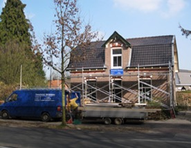
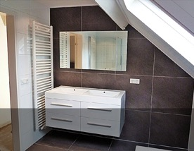

Verbouw of modernisering van uw woning
Kozijnen van hout en kunststof, deuren en ramen plaatsen. Binnen- en buitenmuren (of delen daarvan) plaatsen of weghalen. Houten vloeren en betonvloeren, nieuwe dakconstructies en stucwerk binnen en buiten.
Ook keukens en sanitair plaats en bouw ik, met alles wat erbij komt kijken. En ik zorg voor plaatsing en onderhoud van elektrische installaties en verwarming.

